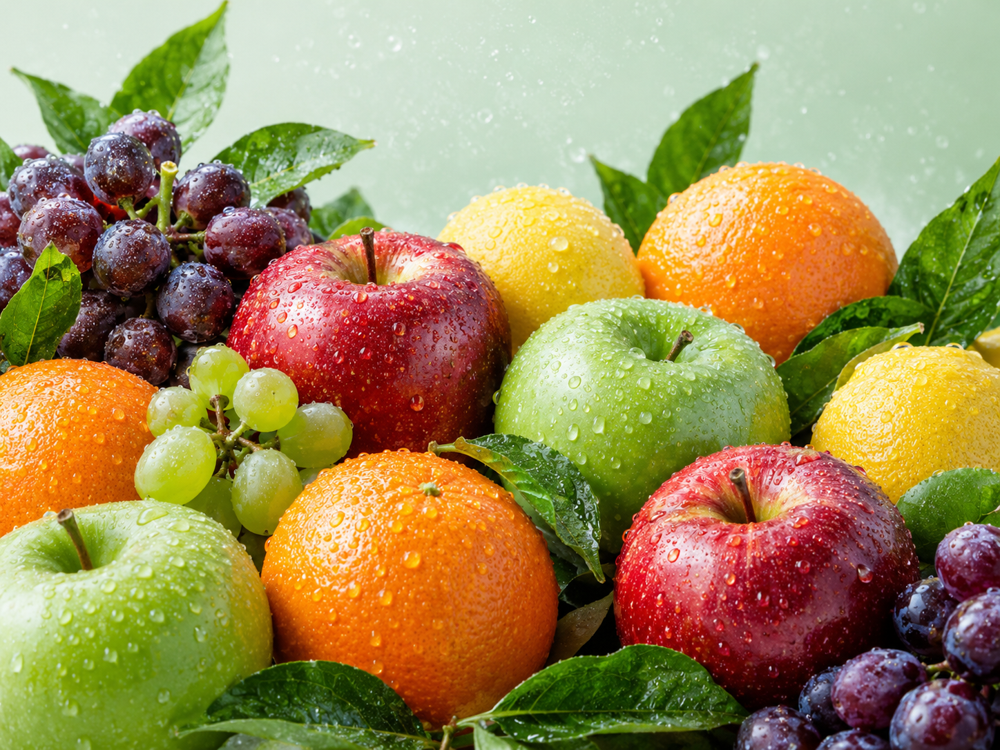
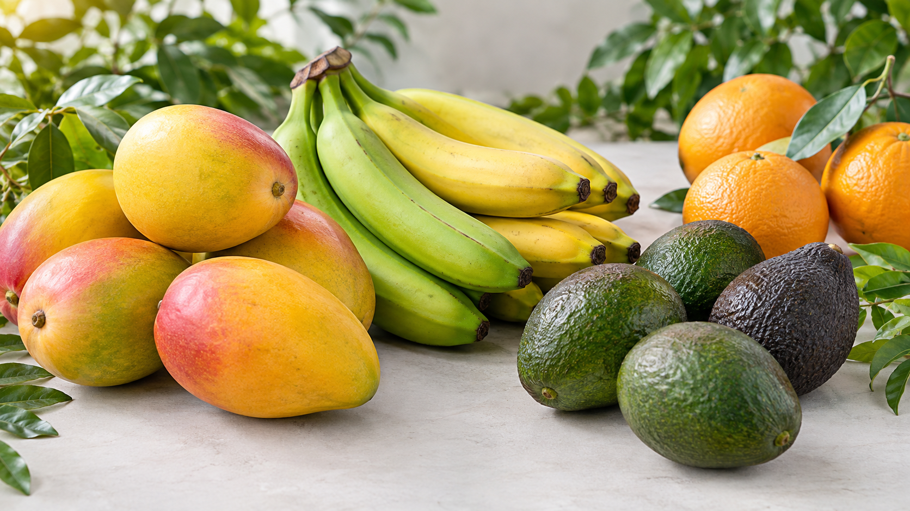
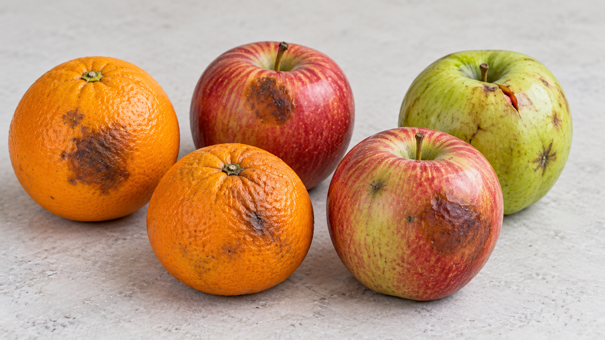

FRESHNESS
🍎 Freshness Check
Look for natural colour, a fresh smell and firm texture where appropriate.
Freshness You Can Trust
Learn how to identify fresh, ripe and good-quality fruits before buying.

Look for natural colour, a fresh smell and firm texture where appropriate.

Check the fruit's variety-specific colour, aroma and gentle firmness.

Avoid fruits with mould, leaking areas, unpleasant smells or extensive damage.